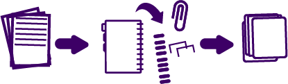

Este tipo de plástico corresponde a botellas desechables para bebidas, bandejas de torta, contenedores de fruta (envases clamshell). Al reciclarlo se convierte en fibras para relleno de sacos de dormir, alfombras, cuerdas y almohadas, zunchos.
Pasos para el reciclaje
Envases PEAD
Polietileno de alta densidad
Se utiliza en envases de detergente, champús, bidones, envases de leche etc. Al reciclarlo se convierte en maceteros, contenedores de basura y botellas de detergente.
Pasos para el reciclaje
Envases PEBD
Polietileno de baja densidad
Se fabrica principalmente bolsas y plástico para envolver. Luego de ser recicladas se convierten en bolsas de supermercado nuevamente.
Pasos para reciclaje
Cartón y papel
Todos los tipos de papeles están compuestos principalmente de celulosa y agua. Al reciclarlo se busca recuperar el mayor porcentaje de celulosa para fabricar otros productos. Dada la gran variedad de tipos de este residuo, se debe tener cautela al separarlos, teniendo especial cuidado de que no estén contaminados con restos de comida, materia orgánica o cinta adhesiva.
Pasos para reciclaje
Cartón
Papel

Latas y metales
Esta fracción de residuos se pueden recuperar infinitas veces y en un 100%. De esta forma reciclar metales como aluminio, cobre, acero, entre otros, resulta un proceso bastante simple en comparación al proceso que significa extraerlos a partir de su origen, proceso que genera un alto impacto en el medio ambiente y consume grandes cantidades de energía.
Para hacer efectivo el reciclaje, debes tener suma atención e identificar a qué tipo de metal corresponde, ya que hay tipos de metales que no pueden ser reciclados como tarros de pinturas o productos tóxicos, latas de aerosol, etc. Que están contaminados o bien tienen residuos que impiden su procesamiento.